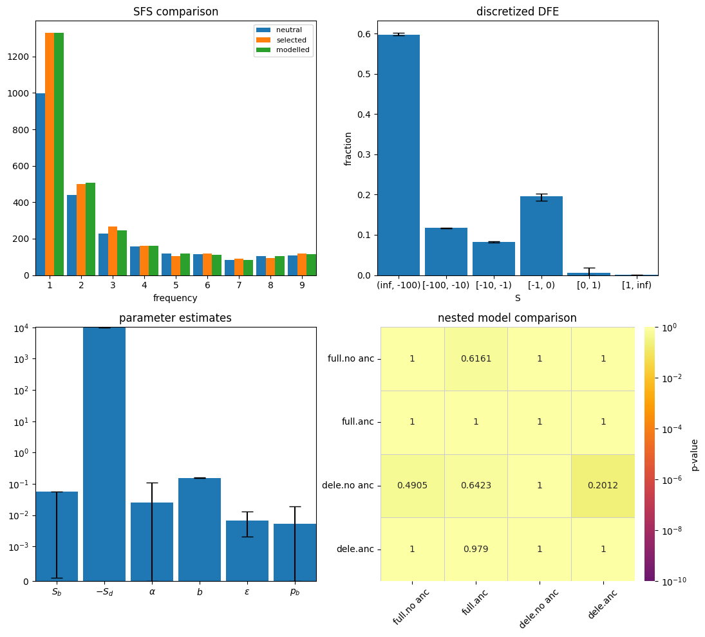

import fastdfe as fd
import matplotlib.pyplot as plt
# create inference object
inf = fd.BaseInference(
# neutral SFS
sfs_neut=fd.Spectrum(
[177130, 997, 441, 228, 156, 117, 114, 83, 105, 109, 652]
),
# selected SFS
sfs_sel=fd.Spectrum(
[797939,1329, 499, 265, 162, 104, 117, 90, 94, 119, 794]
),
n_runs=10,
n_bootstraps=100,
do_bootstrap=True
)
inf.run();
INFO:fastdfe.Discretization: Precomputing linear DFE-SFS transformation using midpoint integration.
WARNING:fastdfe.Optimization: The MLE estimate is within 1% of the upper bound for {} and lower bound for {'all.p_b': 0, 'all.S_b': 0.0001}, but this might be nothing to worry about.
INFO:fastdfe.BaseInference: Successfully finished optimization after 79 iterations and 594 function evaluations, obtaining a log-likelihood of -34.63216290448145.
INFO:fastdfe.BaseInference: Inferred parameters: {'all.S_d': -9867.852019677897, 'all.b': 0.15081059927802082, 'all.p_b': 0.0, 'all.S_b': 0.00010000034366964345, 'all.eps': 0.006854767570905897}.
Bootstrapping: 100%|██████████| 100/100 [00:00<00:00, 123.80it/s]
WARNING:fastdfe.BaseInference: 1 out of 100 bootstrap samples did not terminate normally during numerical optimization. The confidence intervals might thus be unreliable. Consider adjusting the optimization parameters (increasing `gtol` or `n_runs`) or decrease the number of optimized parameters.
axs = plt.subplots(nrows=2, ncols=2, figsize=(11, 10))[1].flatten()
inf.plot_sfs_comparison(ax=axs[0], sfs_types=['neutral', 'selected', 'modelled'])
inf.plot_discretized(ax=axs[1])
inf.plot_inferred_parameters(ax=axs[2])
inf.plot_nested_models(ax=axs[3]);
